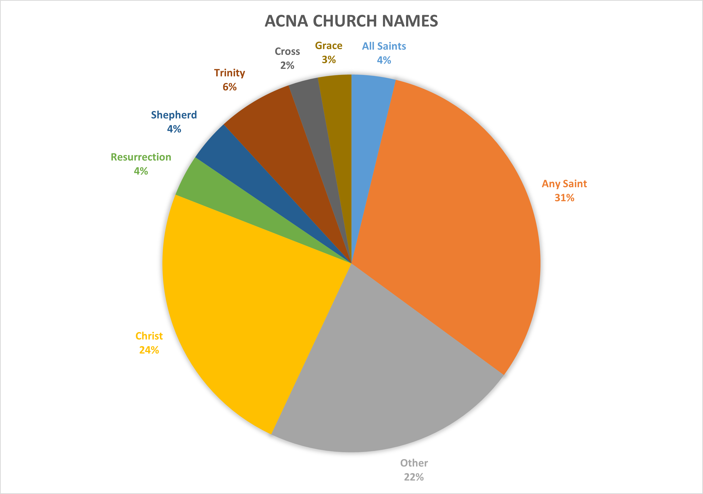
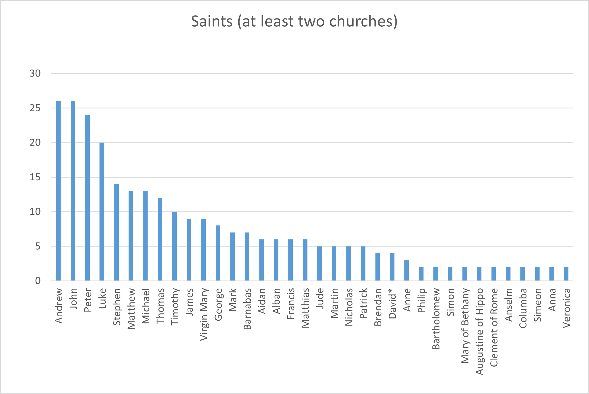
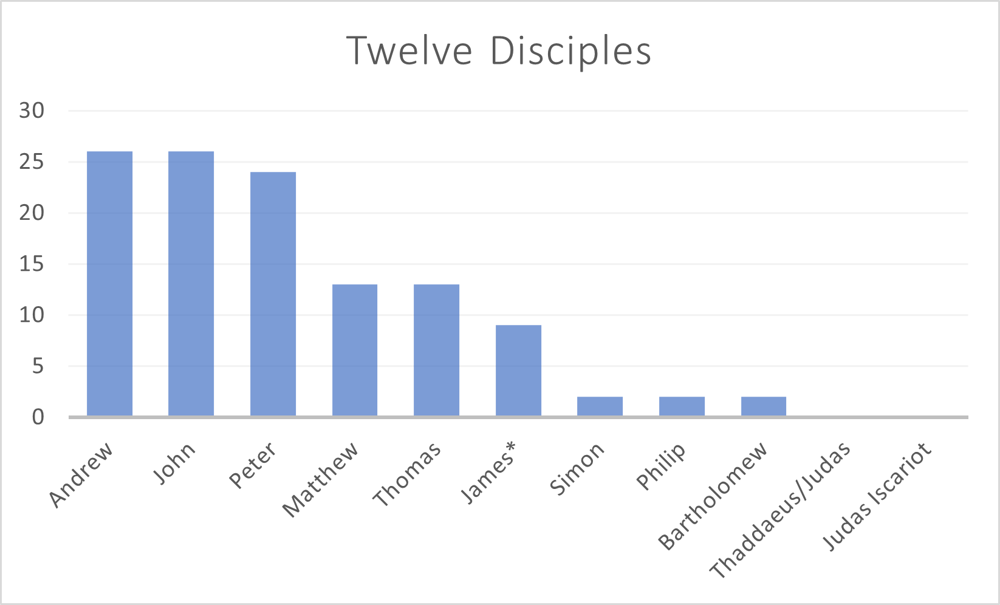
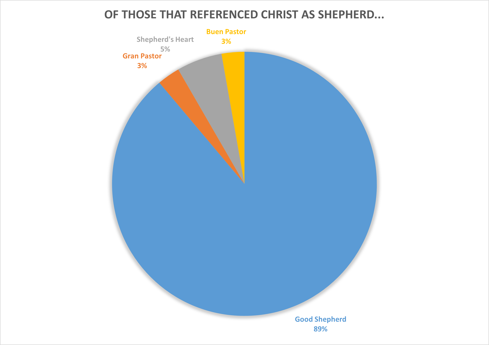
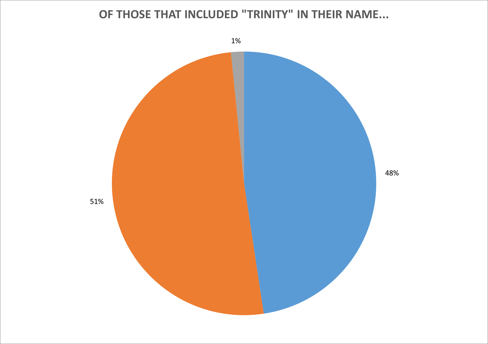
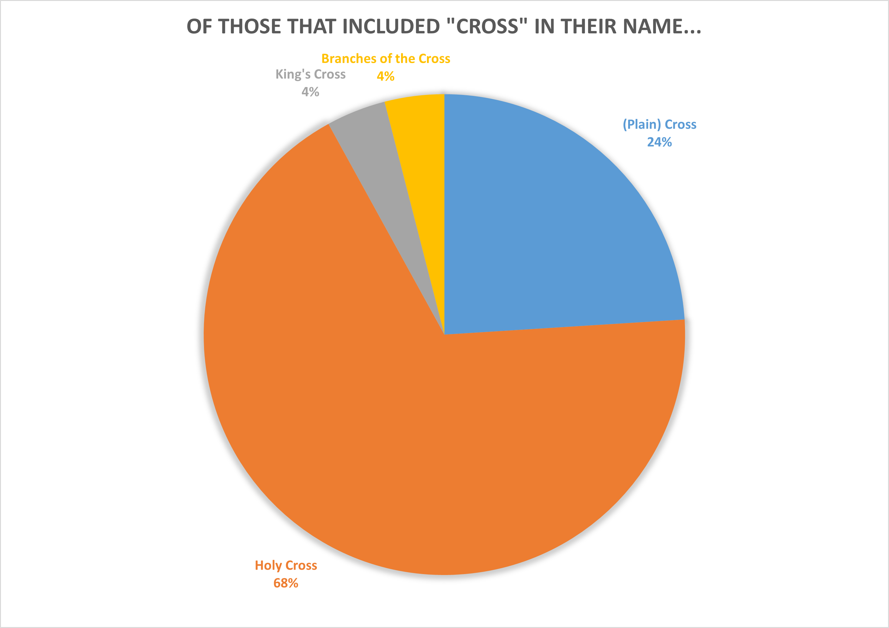

What are the most common names of parishes in the Anglican Church in North America?
The Background
I got the data (which was just names) from here: acna.org. There were 983 entities on that list, not all of which were churches. I did not carefully check if all were churches, but I did remove one senior center. Thus, I considered 982 churches. I go to a church called All Saints Anglican Church. I have long suspected that "All Saints" is the most common name of ACNA churches. Read on to see if my gut was right.
The Data
Figure 1. This pie chart notes several of the most common categories that ACNA parish churches chose to name themselves after. This is not meant to be comprehensive. Main takeaways: almost one-third of churches are named after one or two specific saints. Almost one-quarter include "Christ" in their name in one of forms (e.g. Christ the King or Christ our Redeemer). The single most common name is "Christ Church" (n=40) and the second most common is "All Saints" (n=37).
Figure 2. There are a lot of different saints that ANCA churches named themselves after. A .txt file list all instances, including saints with only one church named after them is here. I was extremely suprised to see so few churches named after the Virgin Mary (I even included Our Lady of X in this category). Maybe no one wants to be thought Catholic?
*David here is not King David but St. David of Wales.
Figure 3. John was the disciple Jesus loved, but he is apparantly also the Evangelist Anglicans love.
Figure 4. Poor Judas (not Iscariot) never gets churches named after him because his mom and dad gave him the fourth most common name of his time.
Figure 5. One group of Spanish-speakers prefers "Gran Pastor" and another prefers "Buen Pastor".
Figure 6. Are the 30 ACNA churches that didn't choose "Blessed Trinity" OR "Holy Trinity" real Christians?
Figure 7. I bet King's Cross gets a lot of Harry Potter fans.